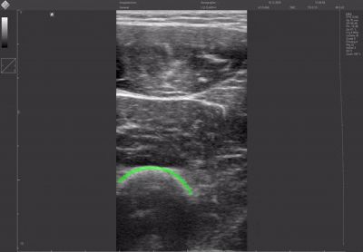

This is a confidential project, so I can't share code or sensitive details before the project is published. What I'm sharing here is a high-level methodology and technical considerations for approaching this problem.
This is a confidential project, so I can't share code or sensitive details before the project is published. What I'm sharing here is a high-level methodology and technical considerations for approaching this problem.
Accurate segmentation of anatomical structures in medical video sequences is critical for clinical workflows such as surgical planning and device design. Traditional manual annotation is time-consuming and introduces variability between practitioners.
Deep learning offers an opportunity to automate this process, but frame-by-frame approaches often produce temporally inconsistent results. This project explores a spatiotemporal strategy to address that limitation.
Instead of processing frames independently, this project implements a 2D+t temporal approach where video sequences are treated as 3D volumes:
This spatiotemporal representation allows the network to learn from neighboring frames, capturing both spatial structures and temporal motion patterns.
Key advantages:
nnU-Net v2 serves as the backbone, configured for 3D spatiotemporal processing. Video frames are stacked chronologically into 3D volumes and fed through 3D convolutions that capture features across both space and time.
The 2D+t temporal approach demonstrates superior performance compared to frame-independent 2D methods:

Temporally consistent segmentation across a medical video sequence